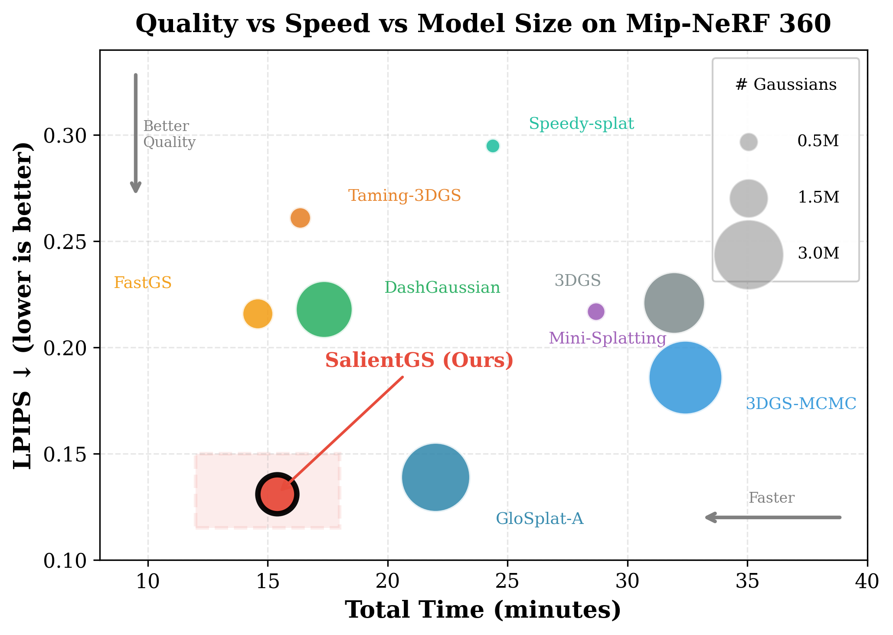
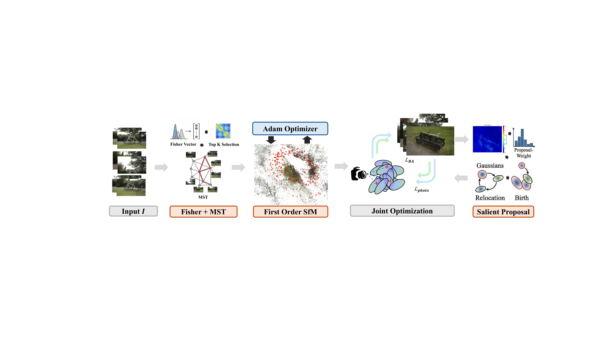

Abstract
Reconstructing 3D scenes from unordered images remains bottlenecked by expensive Structure-from-Motion preprocessing and frozen pose interfaces. SalientGS is a unified SfM-to-3DGS pipeline whose central contribution is importance-guided MCMC Gaussian allocation. Multi-view residuals define per-Gaussian underfit and redundancy signals, which bias both birth and relocation toward underfit regions while preserving the underlying stochastic gradient Langevin dynamics. The result is fast end-to-end reconstruction with strong perceptual quality under a fixed Gaussian budget.
Pipeline

What is new
Importance-guided allocation
Persistent multi-view underfit guides birth and relocation, reallocating capacity from redundant regions.
Unified optimization
Fast first-order SfM is jointly refined with the Gaussian scene using photometric and reprojection losses.
Unordered-image front end
Fisher Vector retrieval and MST connectivity provide a sparse, reliable matching graph without exhaustive matching.
Fixed-budget efficiency
Importance guidance improves quality most when Gaussian capacity is limited, including a 1.0M-versus-1.5M comparison.
Results
| Method | Mip-NeRF 360 PSNR | Mip-NeRF 360 LPIPS | Deep Blending LPIPS | Tanks & Temples LPIPS |
|---|---|---|---|---|
| 3DGS-MCMC | 28.01 | 0.186 | 0.237 | 0.149 |
| GloSplat-A | 28.86 | 0.139 | 0.508* | 0.147 |
| VGGT-X | 26.49 | 0.177 | 0.545† | 0.138 |
| SalientGS | 28.89 | 0.131 | 0.144 | 0.084 |
* GloSplat-A and † VGGT-X fail on the Deep Blending drjohnson scene.
Citation
@inproceedings{xiong2026salientgs,
author = {Tianyu Xiong and Rui Li and Suning Ge and Jiaqi Yang},
title = {SalientGS: Unified SfM-to-3DGS with Importance-Guided MCMC Gaussian Allocation},
booktitle = {Proceedings of the 34th ACM International Conference on Multimedia},
year = {2026}
}